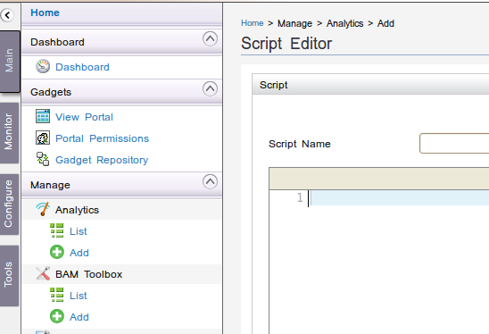
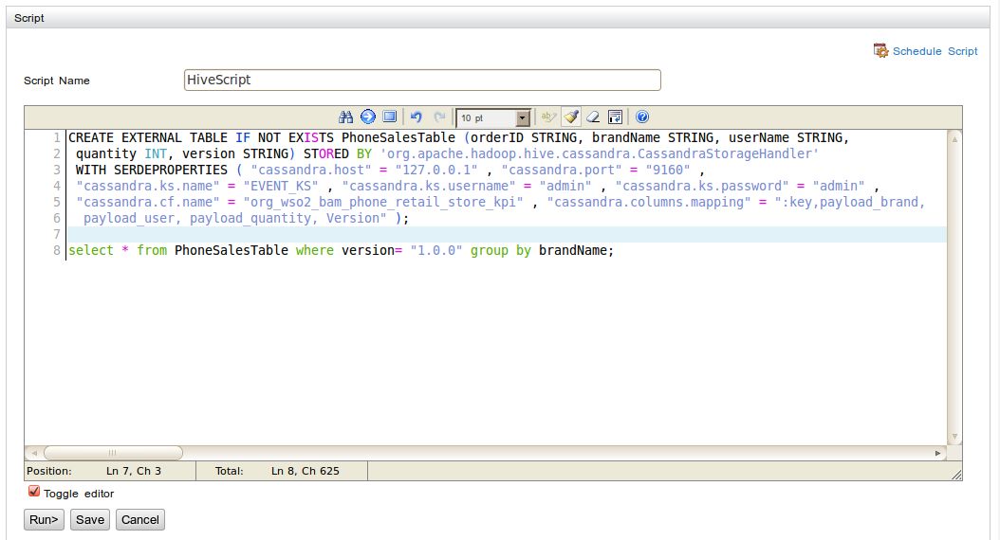
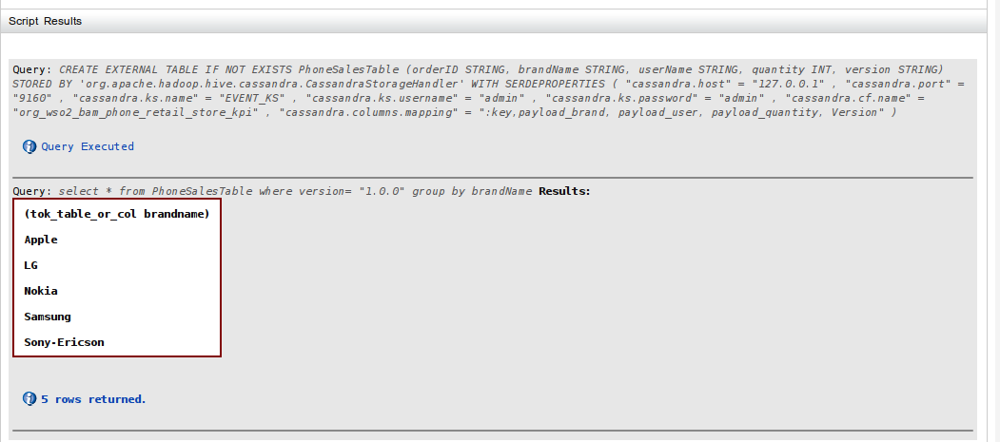
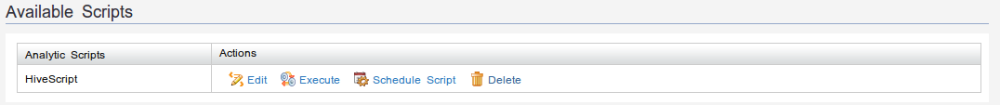
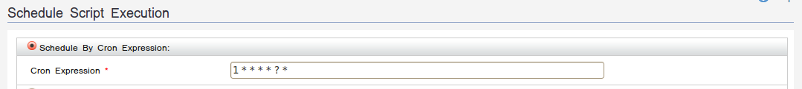
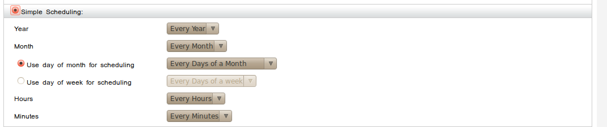

Writing an analytic script
Follow the instructions below to add an analytic script.
- Log on to the Business Activity Monitor Management Console.
- In the "Main" menu, under "Manage" category click "Add" under "Analytics" menu item to get to the "Script Editor" window.
- Now provide a script name and add the required HiveQL script in the editor pane as shown below.
- Click "Run" to execute the script and view results if required. The results will get shown in the panel below the script editor as follows.
- Click "Save" to save the script. Click "No" in the pop up dialog box if it is not required to schedule the script immediately. Else click "Yes" to schedule the script before saving. See the section on scheduling scripts for more information.
- Now it will be redirected to "Available Scripts" page where saved script will be shown as below.





Scheduling a script
- Via "Available Scripts" window if the script has already been saved.
- In "Script Editor" window while editing a saved script.
- Via pop up dialog when saving the script.


There are couple of ways to specify the scheduling interval for the script to run.
- Cron expression. This is more flexible since Cron allows for fine grained interval and scheduling specifications. For more information see Quartz documentation.
- Simple scheduling. This can be used to specify some common scheduling schemes.

